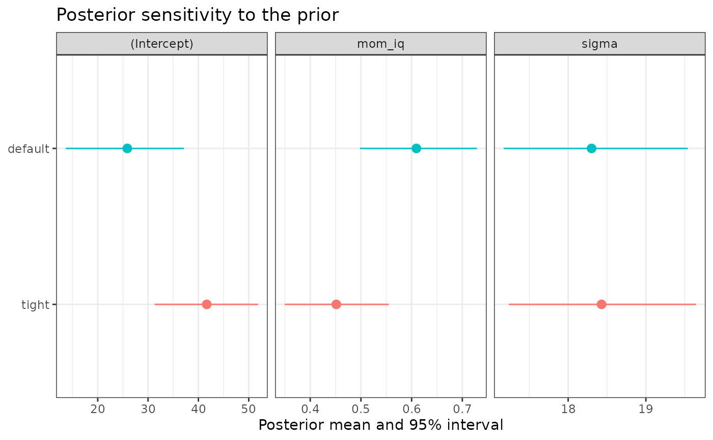

Sensitivity analysis across alternative priors
Source:R/model_sensitivity.R
sensitivity_analysis.RdRefits the model under each of several prior configurations and compares
(1) the posterior of every parameter with a reference configuration and
(2) out-of-sample predictive performance by PSIS-LOO (Vehtari et al.,
2017), including the standard error of each difference. This is the
"global" complement to prior_sensitivity(), which is local and needs no
refitting.
Arguments
- data
A data frame containing all variables in
formula.- formula
A model formula, e.g.
y ~ x1 + x2.- prior_configurations
A named list of prior configurations (each anything accepted by
prior_configinfit_model_with_prior(), withNULLmeaning rstanarm's defaults), or the bmbeR 1.x format: an unnamed list oflist(label = , prior_config = ).- family
A family object, family function or family name:
gaussian,binomial,poisson,Gamma,inverse.gaussianorneg_binomial_2.- chains
Number of Markov chains (at least 4 are recommended).
- iter
Iterations per chain, including warm-up (half by default).
- seed
Random seed passed to Stan, for reproducibility.
- reference
Name or index of the reference configuration.
- metric
LOO estimate reported per configuration:
"elpd_loo","p_loo"or"looic".- shift_threshold
Posterior-mean shift (in reference SDs) that is flagged.
- k_threshold
Passed to
loo::loo(): if notNULL, observations with Pareto \(\hat{k}\) above it are refitted exactly (slow).- keep_fits
Keep the fitted models in the result?
- ...
Further arguments passed to
fit_model_with_prior().
Value
An object of class bmb_sensitivity with elements summary
(posterior summaries by configuration and parameter), comparison (the
loo::loo_compare() table), metric (named vector of the chosen LOO
estimate), converged (named logical), loo (list of loo objects) and,
if keep_fits = TRUE, fits.
Details
A shift of shift_sd means the posterior mean under a configuration
differs from the reference by that many reference posterior SDs;
sd_ratio compares posterior SDs. Shifts at or above shift_threshold
are flagged (a heuristic; choose it for your context).
LOO compares predictive performance, not prior plausibility: a prior can change the estimate of a parameter substantially while barely changing predictions, so both parts of the output should be examined.
References
Vehtari, A., Gelman, A., & Gabry, J. (2017). Practical Bayesian model evaluation using leave-one-out cross-validation and WAIC. Statistics and Computing, 27(5), 1413–1432. doi:10.1007/s11222-016-9696-4
Examples
# \donttest{
data(kidiq, package = "rstanarm")
sens <- sensitivity_analysis(
kidiq, kid_score ~ mom_iq,
prior_configurations = list(
default = NULL,
tight = prior_config(slope = prior_spec("normal", 0, 0.1))
),
chains = 2, iter = 1000, refresh = 0
)
#> Fitting configuration 1/2: 'default'
#> Fitting configuration 2/2: 'tight'
sens
#> <bmb_sensitivity> 2 prior configurations (reference: 'default')
#>
#> Posterior means by configuration (shift in reference posterior SDs):
#> default tight
#> (Intercept) 25.9 41.7 (+2.57!)
#> mom_iq 0.609 0.451 (-2.57!)
#> sigma 18.3 18.4 (+0.21)
#> ! = shift of at least 0.5 posterior SDs
#>
#> Predictive comparison (PSIS-LOO; differences relative to the best):
#> elpd_diff se_diff elpd_loo p_loo
#> default 0.0 0.0 -1878.6 2.9
#> tight -3.4 2.6 -1881.9 2.6
#> |elpd_diff| smaller than ~2 se_diff is not a meaningful difference.
plot(sens)

# }